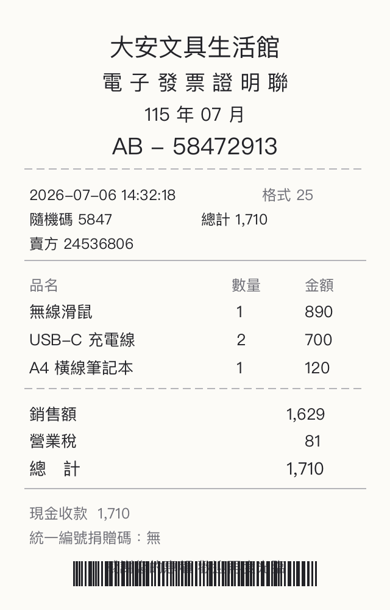

一把免費 Key 讓 AI 聽你說話 看你的圖 開口說英文 吐出程式吃得下的 JSON
打開 console.groq.com/keys
用 Google 帳號登入
按 Create API Key
名稱隨便取 例如 playground
複製 gsk_ 開頭的 Key
貼到下面輸入框 就完成了
按下錄音 照著下面任一段講稿唸 唸完按停止 你的聲音會送到 Whisper 模型 回來就是文字 這段文字等下會餵給站 3 和站 4
curl https://api.groq.com/openai/v1/audio/transcriptions \ -H "Authorization: Bearer $GROQ_API_KEY" \ -F model=whisper-large-v3-turbo \ -F response_format=verbose_json \ -F file=@recording.webm
已經幫你放了一張示範發票 直接按辨識 也可以手機拍你桌上任何收據或名片換上去試

curl https://api.groq.com/openai/v1/chat/completions \
-H "Authorization: Bearer $GROQ_API_KEY" \
-H "Content-Type: application/json" \
-d '{"model":"meta-llama/llama-4-scout-17b-16e-instruct",
"messages":[{"role":"user","content":[
{"type":"text","text":"抽出這張發票的品項和金額"},
{"type":"image_url","image_url":{"url":"data:image/jpeg;base64,..."}}]}]}'
Orpheus 語音模型目前只會說英文和阿拉伯文 所以中文逐字稿要先過一次翻譯 API 再送語音 API 兩個 API 手牽手 就是串接 這也是查證模型能力邊界的一課 不是每個模型什麼都會
curl https://api.groq.com/openai/v1/audio/speech \
-H "Authorization: Bearer $GROQ_API_KEY" \
-H "Content-Type: application/json" \
-d '{"model":"canopylabs/orpheus-v1-english",
"voice":"hannah",
"input":"Your English text here",
"response_format":"wav"}' \
--output speech.wav
把站 1 的逐字稿（或任何一段客戶訊息）丟進來 AI 回的不是文章 是固定欄位的 JSON 分類 情緒 緊急度 一秒變成彩色標籤 這就是客服系統自動分流的原理
curl https://api.groq.com/openai/v1/chat/completions \
-H "Authorization: Bearer $GROQ_API_KEY" \
-H "Content-Type: application/json" \
-d '{"model":"llama-3.3-70b-versatile",
"response_format":{"type":"json_object"},
"messages":[
{"role":"system","content":"你是客服訊息分析器 只輸出 JSON..."},
{"role":"user","content":"客戶訊息"}]}'